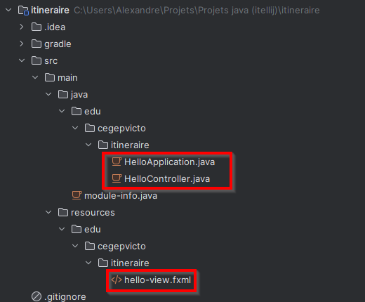

Introduction à JavaFX
Contenus de la section
3-3 Sélection et utilisation des technologies selon le projet et ses contraintes
3-9 Développement du projet en cohérence avec la conception établie
Temps requis
20 minutes
La bibliothèque JavaFX permet le développement d'application avec une interface graphique dans le langage Java. JavaFX travaille avec l'architecture MVC :
- Modèle : ils ne sont pas gérés par JavaFX, car ils n'ont pas d'impact sur la vue.
- Vue : des objets qui représentent les contrôles. On utilise le langage de balise FXML qui est un « cousin » de HTML et qui supporte les styles dans un syntaxe proche du CSS.
- Contrôleur : une classe Java qui gère les contenus de la vue.
Organisation d'un projet


Les projets sont organisés en deux parties :
- Le dossier « java » qui contient le code source (fichiers .java);
- Le dossier « resources » qui contient les fichiers utilisés par java (FXML, CSS, images...).
Les 3 fichiers créés par défaut sont les suivants :
La classe Application est responsable du démarrage de JavaFX et est appelée seulement au début du programme. La classe Stage représente une fenêtre (qui ici est automatiquement créé, passée en paramètre de la méthode start qui sert, comme son nom l'indique, à démarrer l'application). La fenêtre (l'instance de Stage) doit contenir exactement une Scene qui représente le contenu de la fenêtre. On associe souvent le contenu d'une Scene à un fichier FXML.
Durant l'exécution, si l'on change le contenu d'une fenêtre sans changer de fenêtre, on remplacera le contenu de la Scene dans le Stage. Créer un nouveau Stage consiste à créer une seconde fenêtre pour la même application.
La class FXMLLoader permet de charger un fichier FXML pour créer la scène avec ses informations. La méthode getResource fonctionne que si l'élément est au même endroit hiérarchique dans le dossier resource. Donc les deux projets doivent être organisés en miroir. La classe HelloController est situé dans edu/cegepvicto/itineraire dans le dossier java, alors le fichier hello-view.fxml doit être situé dans edu/cegepvicto/itineraire dans le dossier resources.
La contenu graphique commence avec un conteneur (layout) de type VBox. Tous les mots qui commencent par une majuscule en FXML sont des classes de java alors que les mots en minuscule sont des attributs de ces classes. Pour les attributs complexes (comme padding qui contient un objet Insets) on peut les indiquer comme des balises à par entière, inclues dans la balise de la classe (on les place toujours au début). Les objets JavaFX, comme tout fichier XML, doit être structuré en arbre.
Dans le conteneur parent (la racine de l'arbre) contient l'attribut fx:controller qui indique quelle classe agira comme contrôleur de cette Scene. Dans l'objet Label on retrouve la propriété fx:id qui permet de nommer l'objet et de lui accéder (avec ce nom) dans le contrôleur associé. Même chose pour l'objet Button son événement onAction (lorsqu'on le clique) déclenche la méthode onHelloButtonClick dans le contrôleur. Le # est important pour indiquer qu'il s'agit d'une méthode qui est appelée.
| HelloController.java | |
|---|---|
Le contrôleur HelloController contient le champs welcomeText décoré de l'annotation @FXML pour indiquer qu'un élément dans le FXML possède un fx:id du nom de l'attribut. Il en va de même pour la méthode onHelloButtonClick (qui aurait pu être privée sans problème).